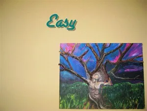
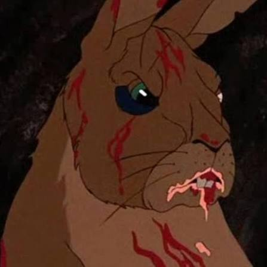
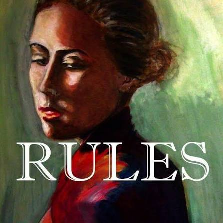
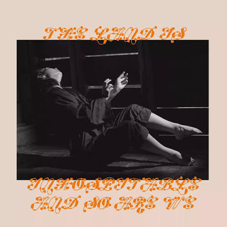
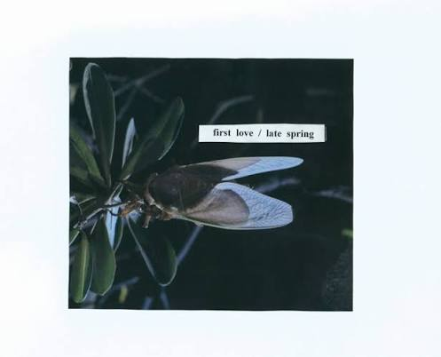
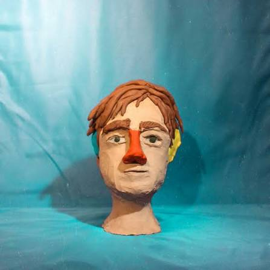
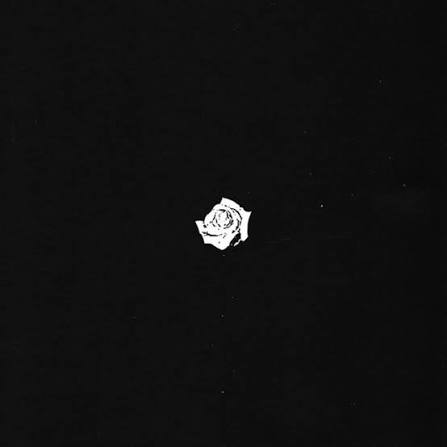
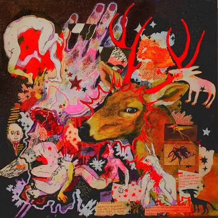
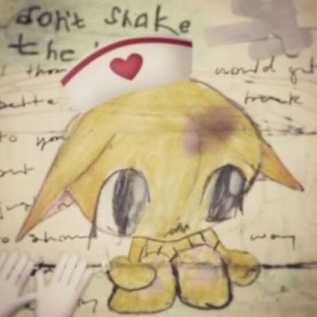

01
I Wait for You
Alex G
“Then we can be together for another night.”
somewhere in october
some things are only
meant to be remembered.
a place with a key
if you were meant to be here,
you probably already know the key.
THE BEGINNING
OCTOBER
Nunca tive um mês tão importante na minha vida quanto aquele.
Naquele momento, eu senti que havia feito uma escolha que mudaria a minha vida.
THOSE DAYS
Aqueles dias em que nos vimos.
As conversas que tivemos.
Os gatos que você adotou.
As tantas músicas que dedicamos um ao outro.
Músicas que ainda ouço até hoje, quase sempre com você passando pela minha cabeça.
KEPT
Eu guardei as datas mais importantes que tivemos juntos.
As músicas continuam salvas dentro de playlists criadas com o seu nome, como se eu pudesse guardar aqueles momentos exatamente onde eles estavam.
UNSENT
E, mesmo assim, nunca as entreguei.
Eram ideias, frases incompletas, pensamentos que às vezes nem consegui terminar.
Mas todos saíam do fundo do meu coração.
WITHOUT CHAINS
Talvez eu quisesse mostrar a você que eu poderia cumprir aquilo que havia dito.
Te mostrar, a cada dia que passasse, o quanto te amava.
Queria mostrar que eu era diferente.
Que havia decidido te amar sem amarras.
LITTLE THINGS
O calor suave da sua mão.
Sua expressão de felicidade quando conseguia algo que desejava.
A surpresa no seu rosto quando te entreguei aquele buquê de rosas.
As vezes em que eu te levava de bicicleta até sua casa.
Nossas risadas vendo sua For You do TikTok.
Os desenhos que fiz de você e nunca entreguei.
Os presentes amassados, feitos à mão, de papel.
Quando nos cobriamos com o cobertor e ficavamos juntos para nos aquecer do frio.
I TRIED
Mas eu sei que fiz o meu melhor.
Eu queria te manter bem. Queria te ver feliz. Queria te manter longe de todos os problemas que pudessem te machucar.
AFTER
E mesmo quando o fim chegou para aquilo que tivemos...
Eu ainda tentei continuar te fazendo feliz.
Mesmo distante.
Mesmo quando já não era a mesma coisa.
Mesmo quando os nossos "bom dia" começaram a desaparecer.
Mesmo quando os "eu te amo" já não eram mais ditos.
Cada pequena ação que eu ainda podia fazer era, de alguma forma, uma demonstração...
de que uma parte de você ainda permanecia intacta dentro do meu coração.
BECOMING
Por sua causa, eu tentei me tornar alguém melhor.
Aprendi a tocar músicas que conseguiam dizer aquilo que eu sentia quando eu não conseguia encontrar palavras para te dizer.
As cartas continuaram sendo escritas.
E continuaram nunca sendo entregues.
Presentes que eu guardo
Aprendi algumas dessas músicas porque não sabia de que outra forma transformar o que eu sentia em palavras

Alex G
“Then we can be together for another night.”

Alex G
“It's the only place I know, but it's my favourite.”

Alex G
“I said: I miss you so bad.”

Mitski
“Moon, tell me if I could send up my heart to you.”

Mitski
“Please, don't say you love me.”

Dayglow
“So can I call you tonight?”

Bedroom
“It consumes my mind. It consumes my soul.”

Alex G
“Let's paint our nails and keep it real.”
girl in red
“We fell in love in October, that's why I love fall.”

mthu
“It's like I'm not even here.”
Eu não sei se você vai ler isso.
Mas espero que, de alguma forma, isso chegue até você.
cada estrela é algo que eu não esqueci.
toque em uma estrela
Depois daquele mês...
E, junto com ele, o outono se tornou a minha estação preferida também.
talvez porque, desde então,
october · 2026